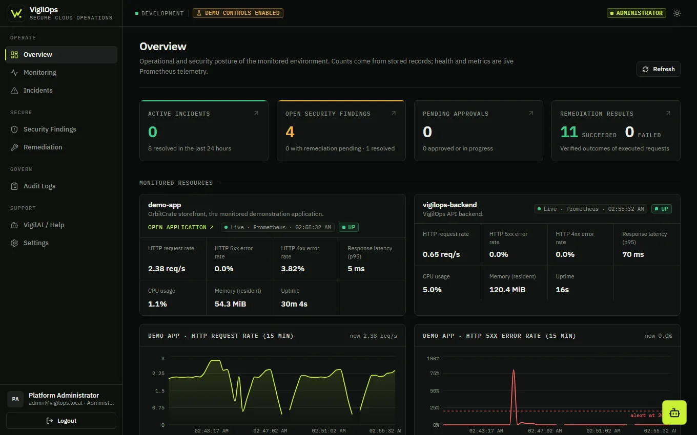
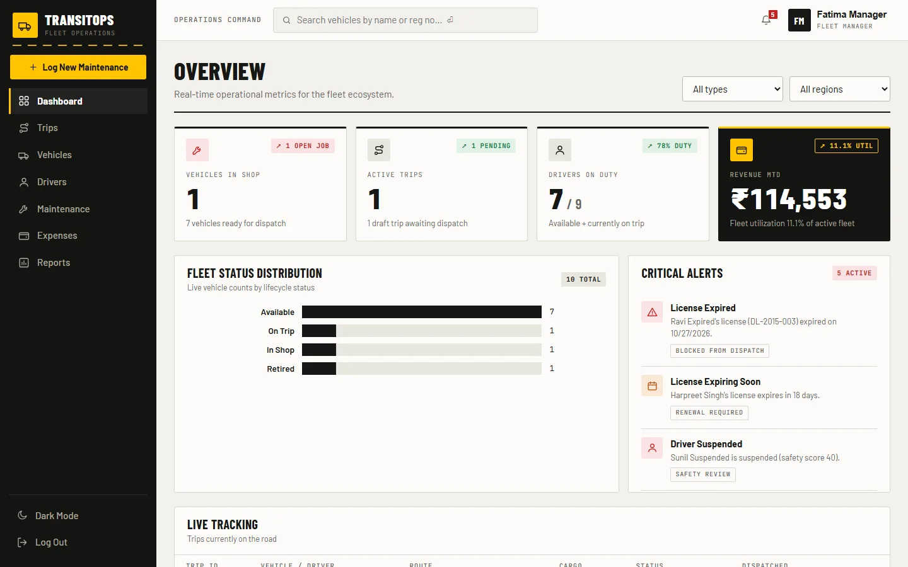

Microsoft DevOps Engineer Expert · Oracle Cloud DevOps Professional
Leads
Cloud Club, GLA University (President)
Base
Gurugram, India
I ship systems, watch them run, and write down exactly where they break.
Cloud and DevOps by training: Docker, Kubernetes, Terraform and CI/CD across AWS, Azure, GCP and OCI. Now I apply the same habits to AI agents. Twelve of my projects are live; the always-on ones were checked from your browser when this page opened.
37 of 37 end-to-end tests on TransitOps, a 41-step run through DealFlow360, 40 automated tests on LeafGuard AI. The numbers are in each README, next to the command that reproduces them.
02 / Observable
You cannot fix what you cannot see.
Prometheus and Alertmanager in VigilOps, second-by-second progress streams in NebulaStream, a full step-by-step log of every agent run in SLM-Agent Lab. I build the instrument panel with the system.
03 / Honest
Limits go in writing.
My write-ups say what is not built, what is simulated and what did not work, including the fine-tuning run that failed to beat its own baseline. A result you can trust is worth more than a result that flatters.
01 / Selected work
Selected work
Thirteen projects: twelve from my fifty-one public repositories and one built as a team. Every number below comes from that project's own README, tests or results files.
01
VigilOps
Monitoring, incidents, security checks and approved fixes in one console.
Year
2026
Context
B.Tech major project
Status
Live
vigilops / console

Screens from the running stack. OrbitCrate, the storefront, is the application being monitored.
One stack that monitors a demo storefront with Prometheus and Alertmanager, turns real alerts into tracked incidents, and scans YAML cloud configuration for security mistakes. A fix is requested, approved by an administrator, applied by a restricted worker and then verified. Every step lands in an audit log that cannot be edited.
8containers from one docker compose up
5scanner rules, SEC-001 to SEC-005
3checks before a fix counts as verified
0edits the audit table accepts: a PostgreSQL trigger rejects UPDATE and DELETE
Qwen answered from memory without calling a tool on 56 of 150 tasks. One accuracy number hides that; a failure label per task shows it.
Fig. 2 / Quantisation
8-bit is free. 4-bit falls off a cliff.
fp321,400 MB
58.0%
f16708 MB
59.3%
int8378 MB
58.7%
int4237 MB
20.7%
At int4, 59.3% of tool calls come out malformed. It breaks syntax, not reasoning.
Fig. 3 / LoRA rank sweep
290 examples did not beat the untuned model.
untuned
59.3%
rank 1
38.7%
rank 4
48.0%
rank 16
54.0%
Accuracy rises with rank but never passes the baseline. Reported as measured.
An evaluation harness that runs small language models, IBM Granite 4.0 and Qwen2.5, through 300 exact-answer tasks with four deterministic tools. It logs every step and gives every wrong answer exactly one failure label. Then it fine-tunes with LoRA and measures what quantisation costs once the model is served.
300test tasks, 56 of them held out as out-of-distribution
4tools: calculator, unit converter, SQL, document search
24unit tests; every run can resume where it stopped
58%accuracy for Granite-350M, against 31.3% for Qwen-0.5B on the same tasks
The sign-in screen has a one-click demo account for every role.
Sales reps build quotations; each one is scored 0 to 100 for discount risk and routed for approval on its own. Confirmed orders are split across warehouses and billed as one-time invoices plus prorated subscriptions. Customers negotiate, track delivery and pay in a separate portal.
28tables in one embedded SQLite database
60+REST endpoints behind role checks
17 + 41unit tests, plus a 41-step end-to-end run
4 + 1internal roles, plus a customer portal on its own token
Free hosting: the first load after an idle spell can take up to a minute.
04 / Odoo Hackathon · 2026Wakes on request
transitops-1xru.onrender.com

TransitOps
A fleet platform that refuses bad dispatches.
Dispatch, maintenance, drivers and costs for a transport fleet. A vehicle in the workshop, a driver with an expired licence or cargo over capacity is refused inside the database transaction, and four roles are enforced on both the API and the interface.
37 / 37end-to-end tests passing: every business rule, validation and permission
1atomic transaction for each dispatch, completion or cancellation
0databases to provision: the service starts its own PostgreSQL, so nothing expires
Practise algorithm problems with a real compile-and-judge loop, or open an interview room: a shared editor, audio and video, synced test cases and a shared timer.
4compilers in the sandbox image: gcc, g++, javac, python3
13seeded problems, from Two Sum to Climbing Stairs
P2Paudio and video over WebRTC; code sync over Socket.IO
Project management with live boards and Gemini built in.
Kanban boards with live presence and shared cursors, wiki documents, sprint planning and role-based workspaces. Gemini turns prompts into tickets, plans sprints and summarises meetings.
34API endpoints across auth, projects, tasks, documents, AI and billing
4permission levels: owner, admin, member, viewer
Livepresence rooms over Socket.io, with stale connections evicted
Upload a video; a queue and an FFmpeg worker do the rest.
Upload a file, record from the webcam or import a stream. A background worker transcodes to several resolutions and formats, burns in a watermark, extracts audio and cuts thumbnails while progress streams to the dashboard. Designed for AWS ECS Fargate with S3 storage.
500 MBupload limit per video
1 sbetween progress messages over Server-Sent Events
3output resolutions: 1080p, 720p and 480p, in mp4 or webm
Classifies tomato and potato leaf photos into nine classes and returns the confidence, the next two candidates and what to do about it. Classical computer vision feeding a Random Forest, so it runs on a CPU.
80.34%test accuracy on a held-out PlantVillage split
36.9 msmean per prediction on CPU, from a 4.51 MB model
40automated tests across backend, model and frontend
Ask a satellite image a question in plain language.
Type a question; the system works out the task, checks that the images are compatible, routes to the right remote-sensing model and shows the answer on a map with an execution trace and a report. Built with team Lunar Circle for an ISRO / SAC problem statement.
4one-click scenarios: urban growth, flood mapping, water, land cover
NDVIand NDWI computed by a rasterio and numpy raster engine
Food ordering, from the restaurant list to the rider at your door.
Browse restaurants by area, customise dishes, apply coupons, check out and follow the rider on a live map. The API is written once and runs either on Express with SQLite or entirely in the browser, which is how the live demo works with no server behind it.
248restaurant outlets across 8 cities and 48 delivery areas, generated the same way on every machine
43tests: pricing, every coupon rule, the order lifecycle, and the same flows again over HTTP
1API core shared by the server and the browser, so the rules cannot drift apart
A streaming app where everything on screen actually plays.
Browse a catalogue, keep a list, switch profiles, and watch in a player that remembers where you stopped and rolls on to the next episode. Every title is in the public domain or openly licensed and streams from the Internet Archive. The API is written once and runs on Express with SQLite or entirely in the browser, which is how the live demo works with no server.
52films and 8 shows (144 episodes, about 108 hours), each with its source and licence on a credits page
28tests: catalogue integrity, resume points across seasons, recommendations, and the whole API again over HTTP
5profiles per account; the children's shelf is enforced in the API, so a direct link outside it returns 404
Food-waste forecasting for hostel messes: cook what will be eaten.
Forecasts how many residents will turn up for each meal, tells the kitchen how many kilograms of every dish to cook, weighs what is left, and replaces the serving queue with digital tokens. Four models sit behind a promotion gate: a new run replaces the serving one only if it beats a naive baseline in a walk-forward backtest. The demo hostel is simulated; the models, the backtests and every score on screen are real.
8.9residents off per sitting in the head-count backtest, against 42.1 for the best naive baseline
11.8%of cooked food never served once the kitchen cooks from the sheet, down from 15.0%, with fewer pots running dry
36tests; one rewrites the last ten days of the log and asserts that no earlier feature moves
An assistant for advocates and law students. Ask a legal question, upload a contract for clause-by-clause review, or draft a bail application or legal notice in court format. Domain guardrails keep every answer inside Indian law. Built as a team of three; my part was the backend and the deployment.
6legal domains with guardrails: constitutional, criminal, civil, family, property and labour
3document formats reviewed clause by clause: PDF, DOCX and TXT
My partthe FastAPI backend, and the deployment on Render and Vercel, in a team of three
Hosts that never sleep are checked from your browser when the page opens. Render's free tier sleeps after 15 idle minutes, so those are contacted only when you press Wake.
No.
Service
Runs on
Status
Open
01
VigilOps consoleLanding page and operations console
A browser check can tell that a host answered and how fast, not what it said. “Responding” means exactly that.
03 / Practice
Problem solving
Two LeetCode profiles and Codeforces, almost all of it in Java. LeetCode figures are a snapshot from 26 November 2026; the Codeforces chart refreshes itself.
Leading a student cloud community, an internship in data, freelance work with Azure AI, and hackathons in between.
Aug 2024 — Present
President
Cloud Club, GLA University
Ran 5+ workshops and bootcamps on cloud, DevOps and containers for 300+ students.
Mentored 50+ juniors on cloud certifications, open-source work and developer tooling.
Jan 2025 — Present
AWS Educate ETC Member
AWS Educate Student Community India
Completed 8+ hands-on labs across compute, IAM, S3 and RDS, and VPC networking.
Built CI/CD workflows with GitHub Actions and Jenkins; set up alerting in CloudWatch and Azure Monitor.
Jul — Aug 2024
AI Developer, freelance
Microsoft Learn project
Built speech recognition and text-to-speech features with Azure AI Services, the Azure Speech SDK, REST APIs and the Web Speech API.
May — Jun 2024
Data Analyst Intern
SkillCred
Cleaned and analysed 50,000+ financial records with Python (Pandas, NumPy) and SQL to benchmark banks against their peers.
Built Power BI dashboards of key performance indicators that fed business decisions.
2025 — 2026
Hackathons and programmes
Built under a deadline
Smart India Hackathon: SatQuery AI with team Lunar Circle for an ISRO / SAC problem statement; JanMat, a sentiment-analysis system, the year before.
Odoo Hackathon: TransitOps and DealFlow360.
Cognizant Digital Nurture: Java full-stack engineering track, covering Spring Boot, JPA, JUnit, Mockito and microservices.
Education
Where it started
2023 — 2027
B.Tech, Computer Science & Engineering
GLA University, Mathura
Specialisation in Cloud Computing. CPI 8.25 / 10.
Major project: VigilOps, a secure cloud operations platform.
2020 — 2022
Senior Secondary and Secondary
Seth M.R. Jaipuria School, Varanasi
Class XII in 2022 with 89%; Class X in 2020 with 92%.
05 / Credentials
Four clouds
Nine certifications across Microsoft Azure, Oracle Cloud, AWS and Google Cloud, led by Microsoft's DevOps Engineer Expert and Oracle's DevOps Professional. Each one can be verified with the issuer.
Microsoft
Azure
DevOps Engineer ExpertMicrosoft Certified · AZ-400 · Aug 2026
Azure Developer AssociateMicrosoft Certified · AZ-204 · Jun 2026
OCI 2025 Foundations Associate1Z0-1085-25 · Aug 2025
Google
GCP
Google Cloud FundamentalsCore Infrastructure
Also on Microsoft Learn: 29 modules and 5 learning paths, covering Azure AI Fundamentals, Azure OpenAI, AI Vision, Document Intelligence, speech and language services, and an AI-agent path on Microsoft Foundry (April 2026). View the profile ↗